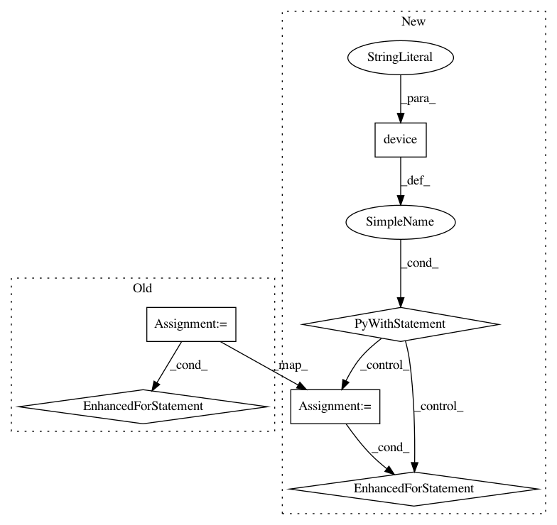

9b72ec0d4963412e9790b06d22f051a9723af33c,python/tests/test_tf_transformer.py,,test_attn_value_seq_mask,#Any#,41
Before Change
res = dot_product_attention(q, k, v, mask=mask)
with tf.Session() as sess:
res, gold = sess.run([res, v])
for b in range(B):
for h in range(H):
for t in range(T):
print(b, h, t)
np.testing.assert_allclose(res[b, h, t, :], np.mean(gold[:, :, :lens[b], :], axis=2)[b, h, :], atol=1e-5)
def test_attn_value_sub_mask(qkv):
q, k, v = qkv
B, H, T, _ = q.get_shape().as_list()
q = tf.zeros_like(q)
After Change
def test_attn_value_seq_mask(qkv):
q, k, v = qkv
with tf.device("/cpu:0"):
B, H, T, _ = q.get_shape().as_list()
q = tf.zeros_like(q)
lens = np.random.randint(1, T, size=B).astype(np.int32)
tf_lens = tf.constant(lens)
mask = tf.expand_dims(tf.expand_dims(tf.sequence_mask(tf_lens, T, dtype=tf.float32), 1), 1)
res = dot_product_attention(q, k, v, mask=mask)
with tf.Session() as sess:
res, gold = sess.run([res, v])
for b in range(B):
for h in range(H):
for t in range(T):
print(b, h, t)
np.testing.assert_allclose(res[b, h, t, :], np.mean(gold[:, :, :lens[b], :], axis=2)[b, h, :], atol=1e-5)
def test_attn_value_sub_mask(qkv):
q, k, v = qkv
with tf.device("/cpu:0"):
B, H, T, _ = q.get_shape().as_list()
In pattern: SUPERPATTERN
Frequency: 4
Non-data size: 6
Instances
Project Name: dpressel/mead-baseline
Commit Name: 9b72ec0d4963412e9790b06d22f051a9723af33c
Time: 2019-02-24
Author: blester125@users.noreply.github.com
File Name: python/tests/test_tf_transformer.py
Class Name:
Method Name: test_attn_value_seq_mask
Project Name: dpressel/mead-baseline
Commit Name: 9b72ec0d4963412e9790b06d22f051a9723af33c
Time: 2019-02-24
Author: blester125@users.noreply.github.com
File Name: python/tests/test_tf_transformer.py
Class Name:
Method Name: test_attn_value_sub_mask
Project Name: dpressel/mead-baseline
Commit Name: 9b72ec0d4963412e9790b06d22f051a9723af33c
Time: 2019-02-24
Author: blester125@users.noreply.github.com
File Name: python/tests/test_tf_transformer.py
Class Name:
Method Name: test_attn_value
Project Name: THUNLP-MT/THUMT
Commit Name: 4af72126c388385371b1235d1336c1ef98723326
Time: 2019-04-30
Author: playinf@stu.xmu.edu.cn
File Name: thumt/utils/parallel.py
Class Name:
Method Name: shard_features